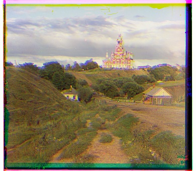
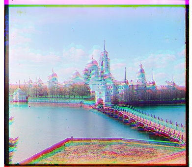
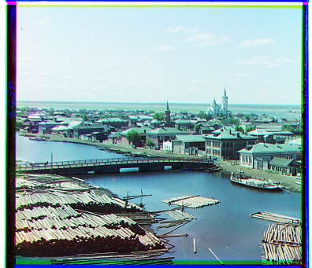
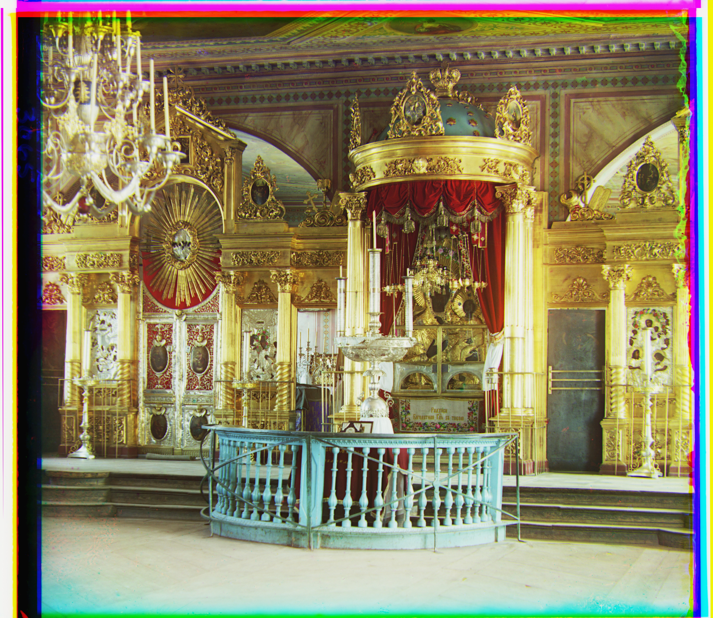
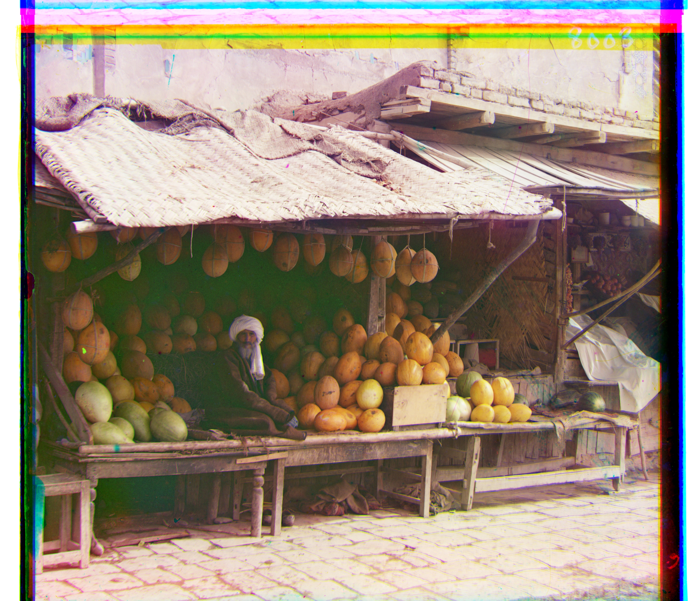
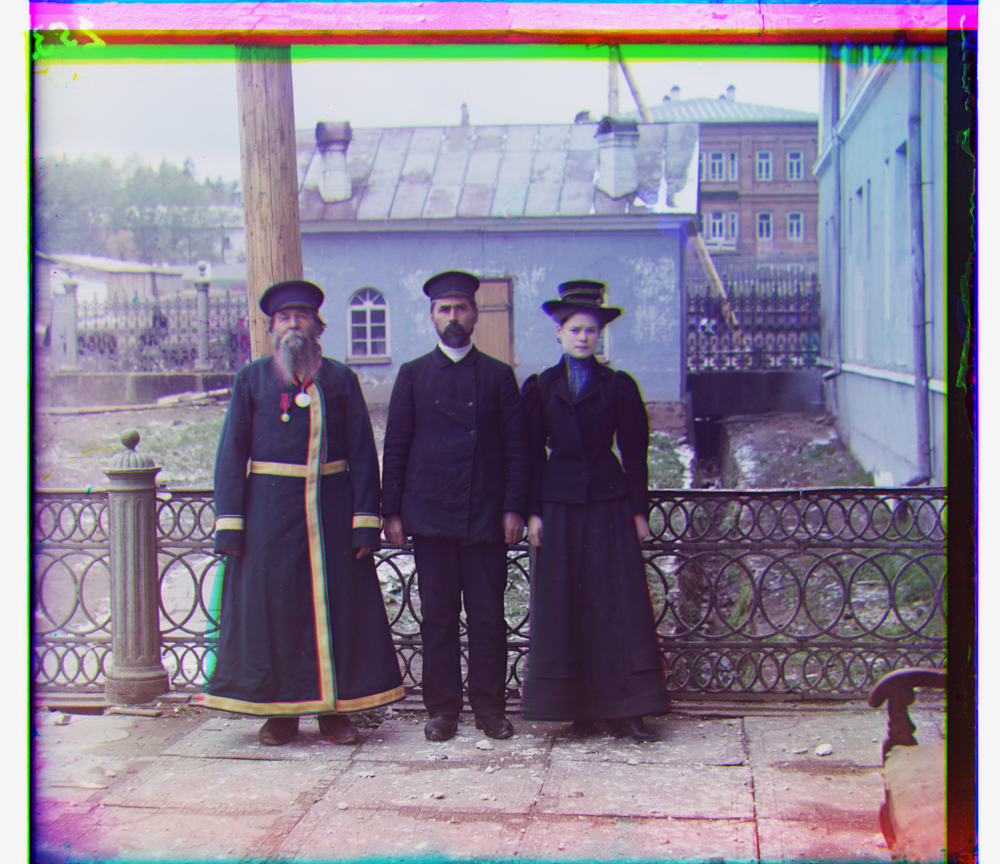
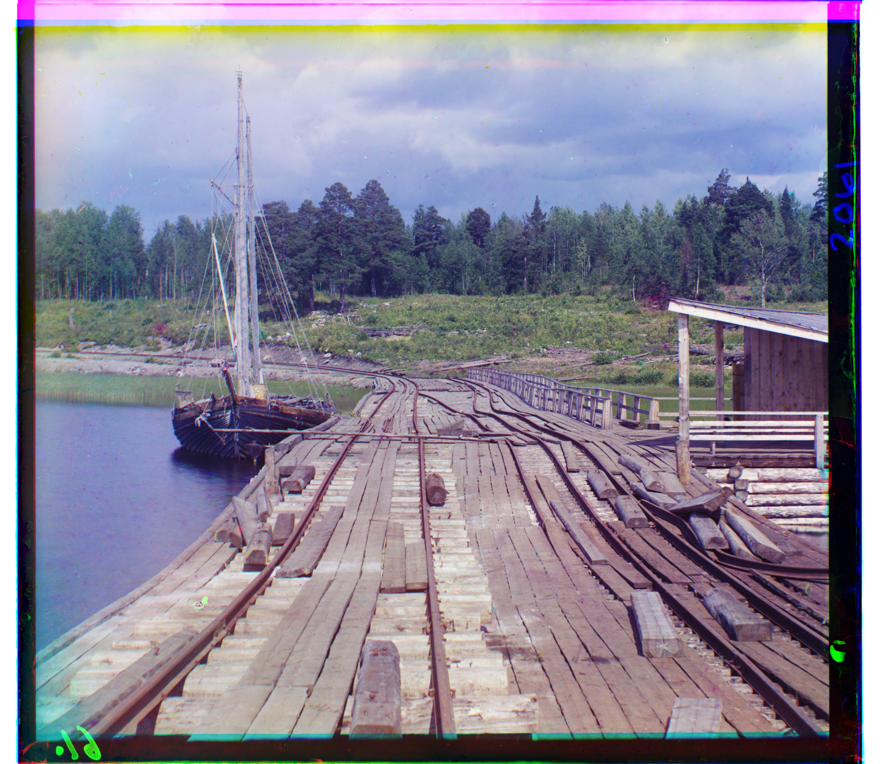
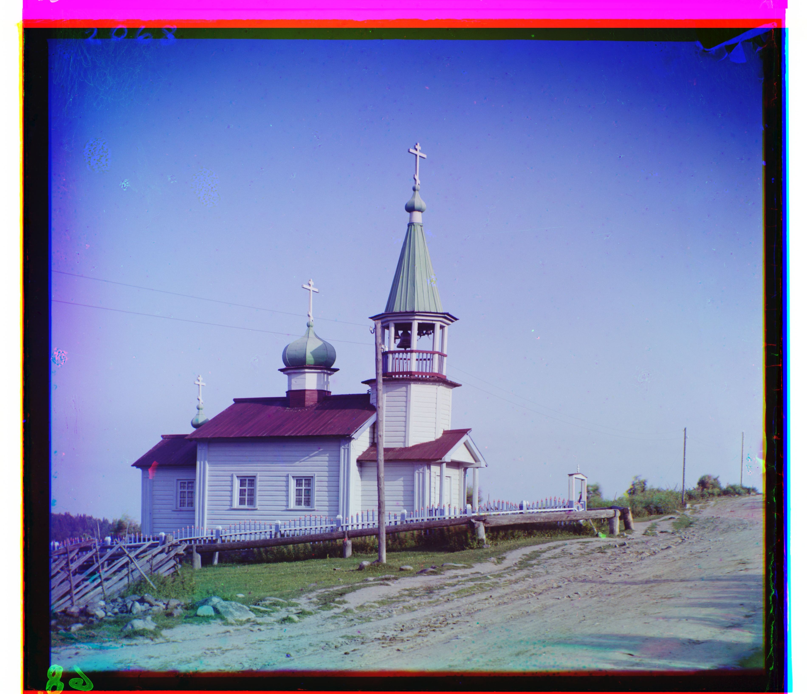
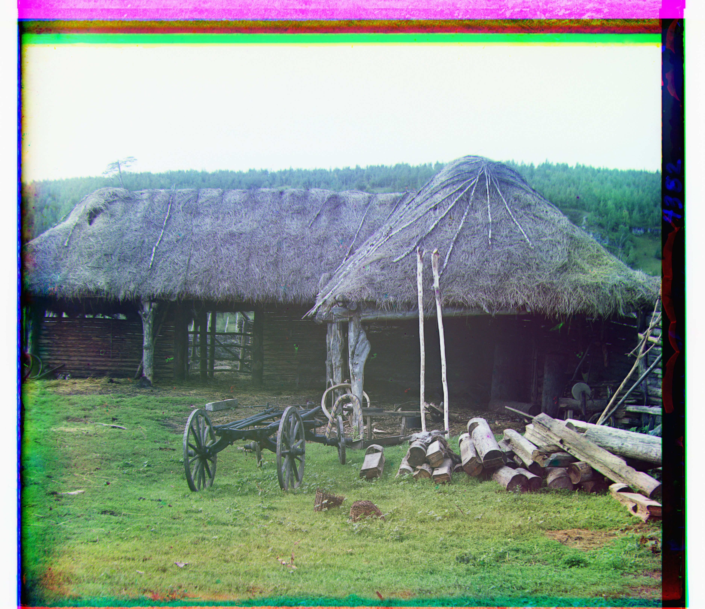

G: (-1, 1) R: (-1, 7)
NCC G: x.xx, R: x.xx

G: (0, -6) R: (1, 9)
NCC G: x.xx, R: x.xx

G: (2, 3) R: (3, 6)
NCC G: x.xx, R: x.xx
Colorizing through RGB 3-layer alignment.
For a single-scale alignment, I naively implemented align method by going through all 15x15 chunks and computing Normalized Cross Correlation (NCC) per global shift (dx, dy) of the image.


Removing border while computing loss significantly improved loss for monastery (see below the final result). This is likely because of the black border: the picture is very noncontrastive and bright, and the border shifts the mean distribution of values towards right, worsening NCC score everywhere, which results in a jittered alignment since after normalizing, picture gets even less contrastives and it is harder to align.


For a multi-scale alignment, I implemented a pyramid_align colorization method:
it first takes in an image and a reference, and recursively rescales the image into twice smaller image.
In the base case of next largest image to 256x256, I calculate optimal (dx, dy) shift.
Then, I keep upscaling the image until we reach the original shape, and keep adjusting the shift.
Notably, I noticed that NCC for low scale images is much higher than for high scale images. This can be explained by the fact that when the resolution of the image is smaller, we differentiate less details and thus alignment task in general is easier.
ncc 0.7373644113540649 # 16x downscaled image ncc 0.7347612380981445 ncc 0.7180508375167847 # 8x downscaled image ncc 0.7100626826286316 ncc 0.7071645259857178 # 4x downscaled image ncc 0.31755244731903076 ncc 0.3037656545639038 # 2x downscaled image ncc 0.29053062200546265 ncc 0.28564298152923584 # original shapes ncc 0.2835182547569275


Pyramid implementation by itself did not improve significantly the alignment compared to the base alignment. The algorithm kept failing on all large .tif files. To capture finer details, I tried edge detection method: Roberts, Scharr, and Sobel. I used Sobel in the final algorithm.

















The project focuses on alignment. However, the coloring is definitely off, and I would love to fix it in future.